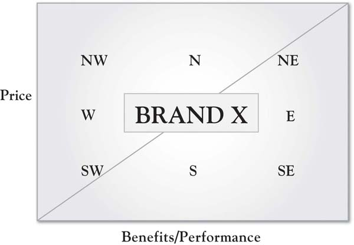
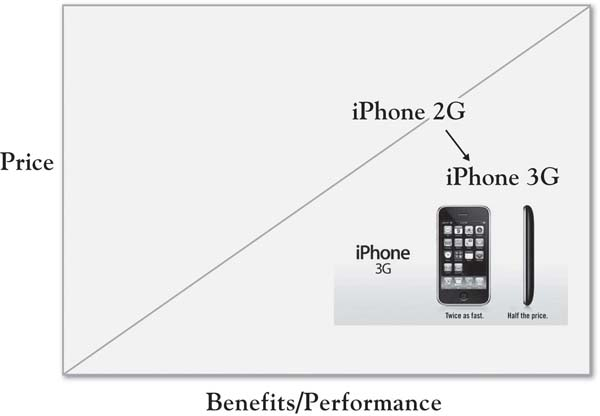

There are a number of prescriptions for growth that emerge from the 3-Circle model. However, growth strategy should not be developed independent of the firm’s overall positioning strategy. At the end of Chapter 5 "Sorting Value", the value map was presented as a means of thinking through where your offering lies in a value space, defined by price on one axis and perceived benefits on the other. Growth strategy ideas that each seek to improve value for customers should form an integrative whole to the extent possible, and should be consistent with the overall positioning and meaning for your organization or brand. As you think through growth strategies, it is important to do so with the backdrop of your goals for your overall position as a choice alternative for the customer. The overall goal of the analysis is to improve the value proposition for the customer relative to competitors to increase the probability that the customer will choose your offering.
We have replicated the value map from Chapter 5 "Sorting Value" into Figure 6.2 "Directional Moves on the Value Map", which illustrates “directional” moves from a center location. As noted in Chapter 5 "Sorting Value", a firm improves its value proposition by either adding or improving benefits or lowering the customer’s costs. The degree to which adding or improving benefits (moving east on the value map) increases sales depends on whether those benefits are important to customers. The degree to which changing customer costs or price will affect sales depends on customer price sensitivity. Lowering customer costs represents a southerly move, while raising customer costs is a move toward the north on the map. However, simultaneous changes in both numerator and denominator can occur—then, customer response depends on the combined impact on value. So a firm might add benefits and raise price, which would move it northeast on the 45-degree line on the map, as when Ford makes a hybrid version of its Escape SUV and charges $9,000 more. Alternatively, a southwest move would involve reducing benefits compared to an existing position and lowering price, illustrated by a cluster of emergent cell phone and cell phone service providers like Net10 who sell simple cell phones on prepaid plans at prices substantially lower than the standard national carriers. Figure 6.3 "Repositioning the iPhone 3GS: “Twice as Fast. Half the Price.”" illustrates a unique strategy by Apple, moving the iPhone southeast—enhancing both benefits (twice as fast) and cost (half the price). We will see that this overall value positioning is difficult but increasingly evident, reflected in Kim and Mauborgne’s work on value innovation and blue ocean strategy.Kim and Mauborgne (2005). In sum, while we think of individual changes as additions or deletions of attributes or benefits, such changes, in fact, (a) may have multiple elements, and (b) will eventually be translated in the minds of customers to some sense of overall value for the money. The degree to which such changes contribute to improved profitability is a function of both changes in sales revenue and changes in cost.
Figure 6.2 Directional Moves on the Value Map
Figure 6.3 Repositioning the iPhone 3GS: “Twice as Fast. Half the Price.”
